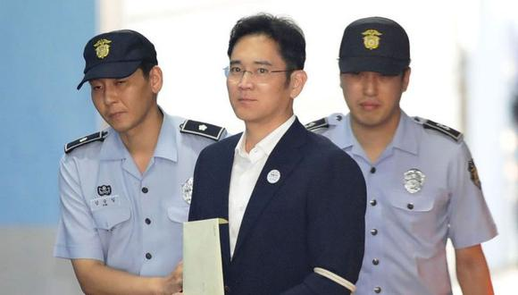

Ultimas noticias

El heredero del imperio Samsung, Lee Jae-yong, negó los cargos contra él en el inicio del juicio por fraude contable y manipulación de precios de activos bursátiles cometido supuestamente por el empresario durante la polémica fusión de dos compañías del grupo en el 2015.
Los abogados de Lee negaron todos los cargos ante el tribunal del Distrito Central de Seúl que lleva el caso, según informó la agencia Yonhap.
Clarocloud,Empresas